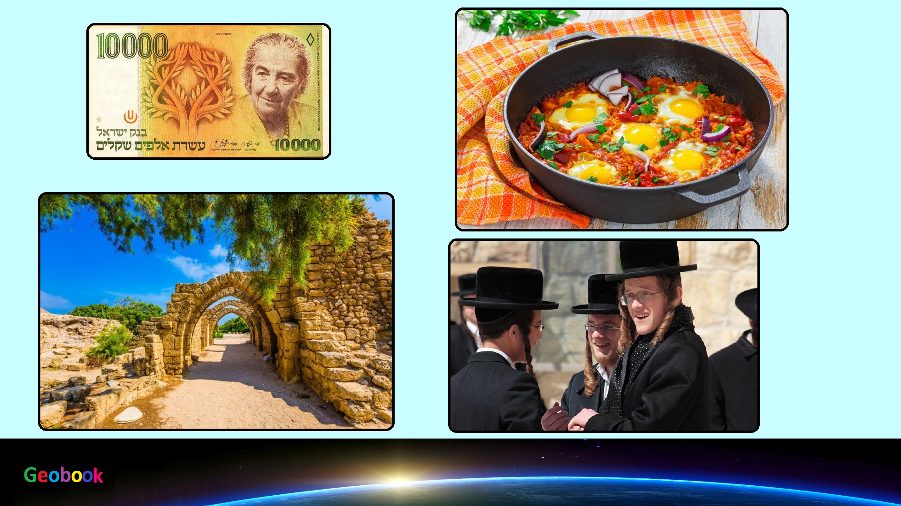

____
Гимн
Пока в наших сердцах
כֹּל עוֹד בַּלֵּבָב פְּנִימָה
Еврейская душа еще тоскует,
נֶפֶשׁ יְהוּדִי הוֹמִיָּה,
И дальше на восток,
וּלְפַאֲתֵי מִזְרָח קָדִימָה,
Глядя в сторону Сиона;
עַיִן לְצִיּוֹן צוֹפִיָּה;
Мы еще не потеряли надежду,
עוֹד לֹא אָבְדָה תִּקְוָתֵנוּ,
Надежде две тысячи лет,
הַתִּקְוָה בַּת שְׁנוֹת אַלְפַּיִם,
Быть свободным народом на нашей земле,
לִהְיוֹת עַם חָפְשִׁי בְּאַרְצֵנוּ,
Земля Сиона и Иерусалима
אֶרֶץ צִיּוֹן וִירוּשָׁלַיִם
____
